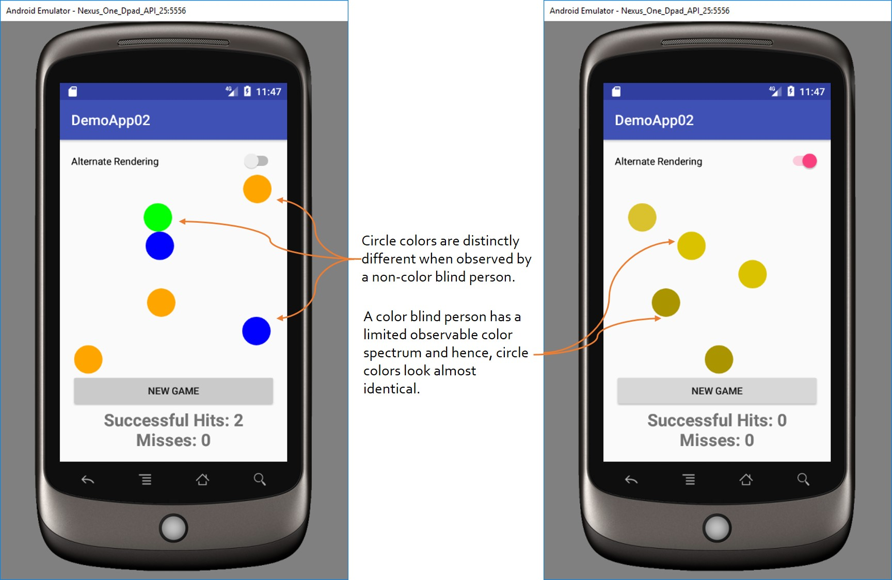

Color Blind Safe Accessibility
Introduction
Color blindness (sometimes refereed to as color-vision deficiency) is the inability to see differences in colors and impacts about 8% of males and 0.5% of females (of European descent).
This activity demonstrates the importance of selecting the right colors for user interface (UI) elements by utilizing colors that
are color-blind safe. In this activity, colored circles will be moving across the screen (top to bottom). If a green circle is tapped,
a successful hit is recorded; otherwise an unsuccessful hit is recorded. In the Alternate Rendering of
the app, the circles will be rendered in colors as seen by a user with color blindness of type deuteranopia.
As shown in the below image, a user that is not color blind can easily distinguish the circle colors on the
screen. However, the same colors will appear to be very similar to a user that is color blind.

Activity
Download the activity here.
The non-accessible version of this app is located here.
The accessible version of this app is located here.
More Resources
1. Color palettes for color blindness2. Color blind simulator